Gives MCP server builders a concrete checklist (tool consolidation, schema-constrained inputs, stdio-vs-HTTP transport limits, CIMD over DCR for auth) to run before exposing a server to untrusted agents, backed by a load-test number show...
This traces the talk's own throughline from tool-level threats to coarse-grained design, a production transport, and modern client auth, capped by enterprise data controls; the ordering is our synthesis of the speaker's argument (ours).
“Attackers can embed hidden instructions inside descriptions that are invisible in the UI, but the model will follow them without question.”
said at 02:36“An agent iterating over a poorly scoped MCP server is broadcasting your data with every retry.”
said at 03:07“Don't give the agent access to delete users when all it needs is to check an order.”
said at 05:14“20 out of 22 requests failed with just 20 simultaneous connections.”
said at 09:25“It still represents more than 50% of the MCP servers out there.”
said at 13:04“DCR is vulnerable to phishing attacks because it doesn't provide a reliable way to verify client identities.”
said at 19:19“CIMD is a leap forward, and it is the preferred approach since November 2025.”
said at 22:29“agents should never be exposed to data that they have no business handling”
said at 22:59(ours) The talk treats design and security as inseparable ('a badly designed MCP server is also a badly secured one'), which reframes OAuth/transport hardening as necessary but not sufficient — the five design principles are presented as the layer that has to come first, before any auth work.
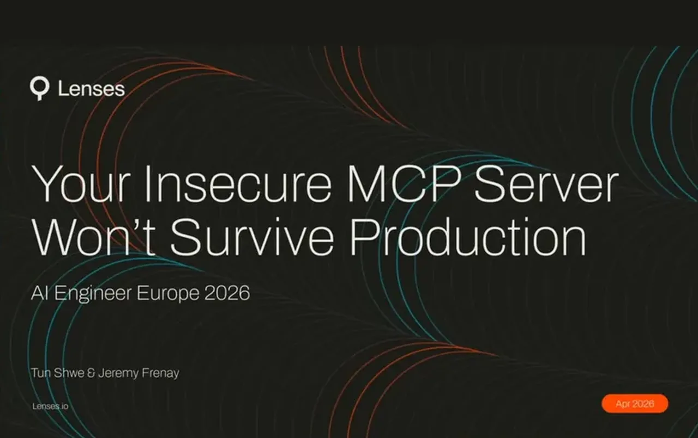
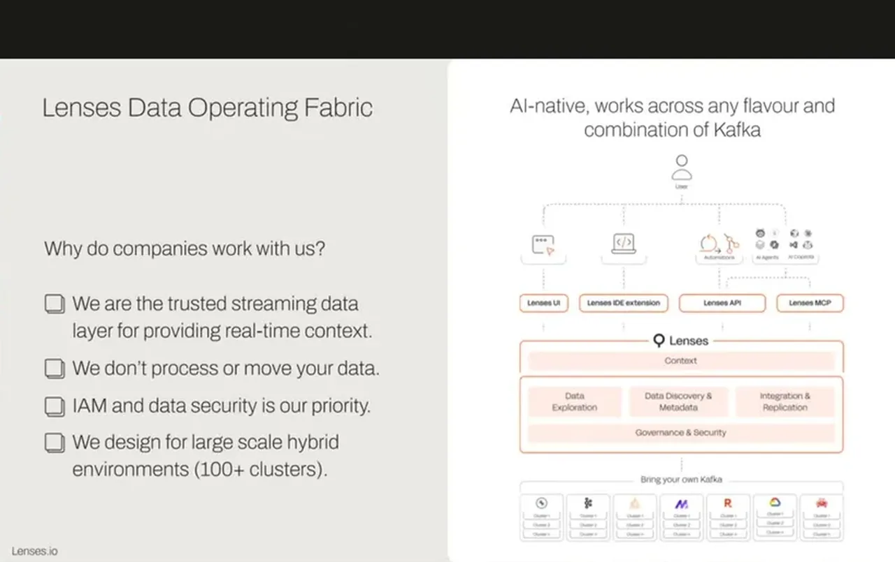
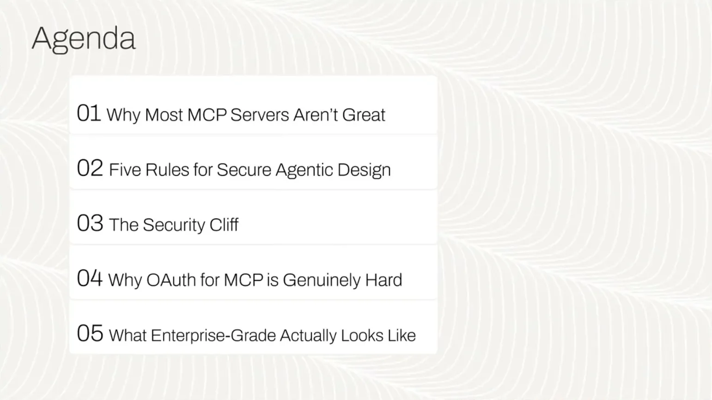
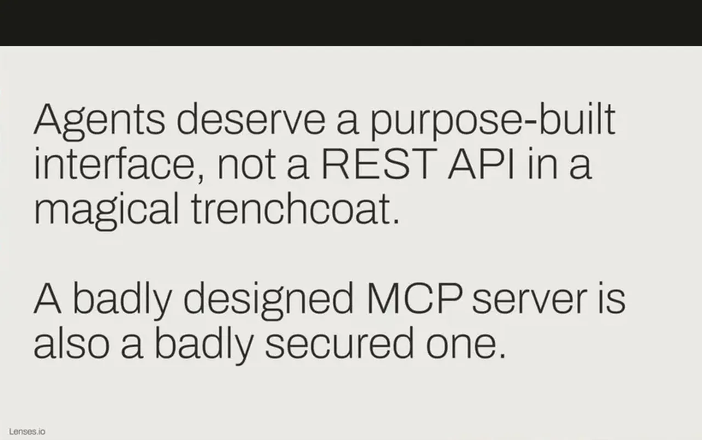
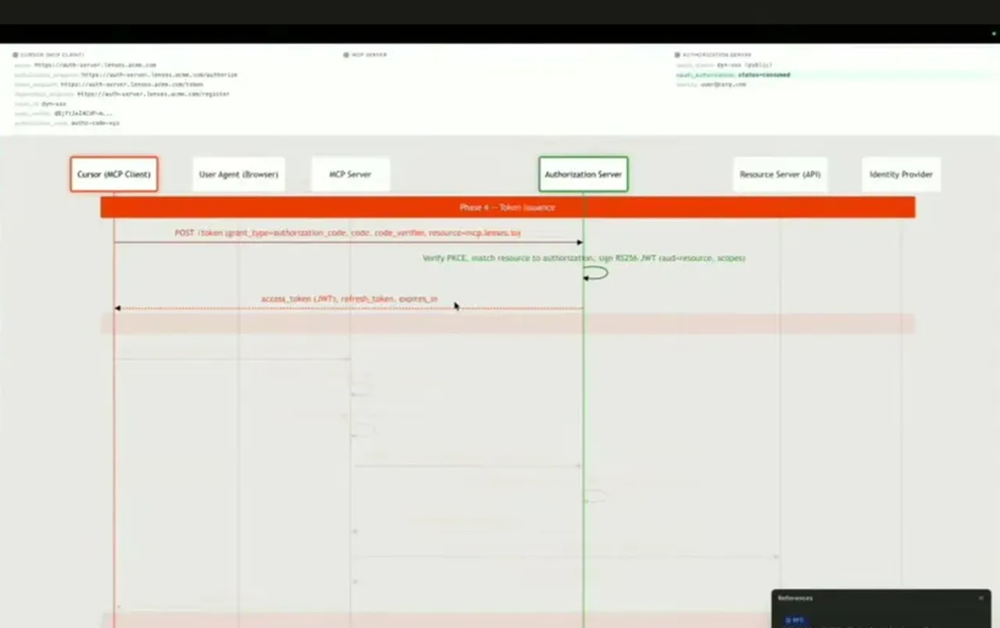
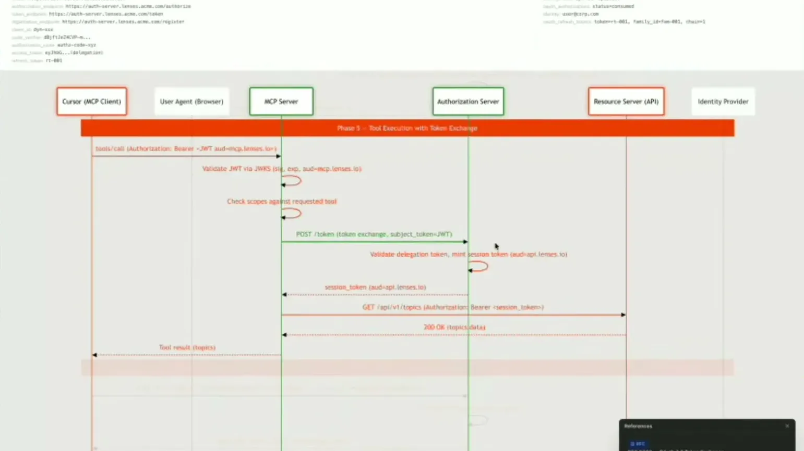
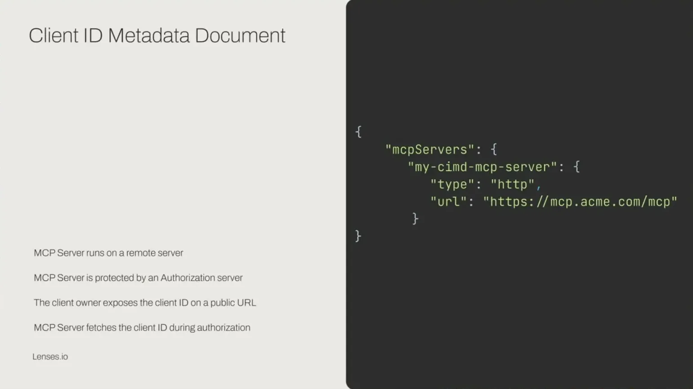
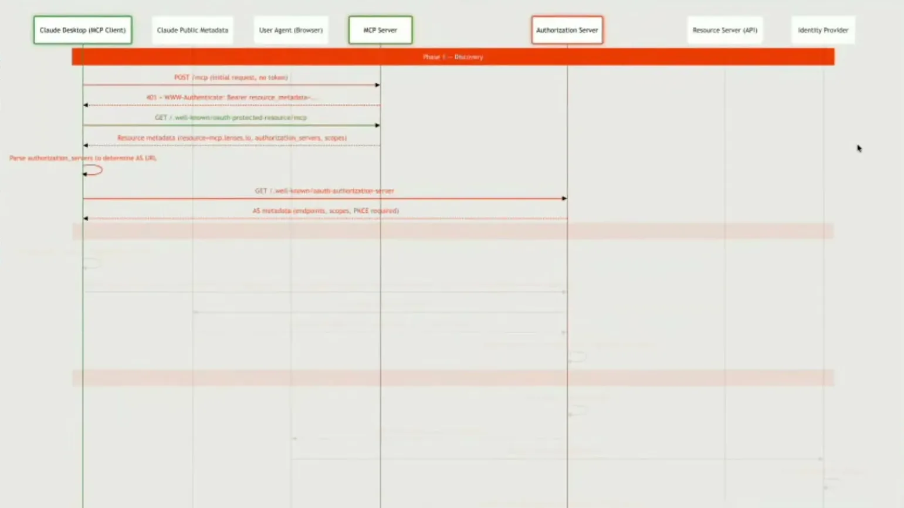
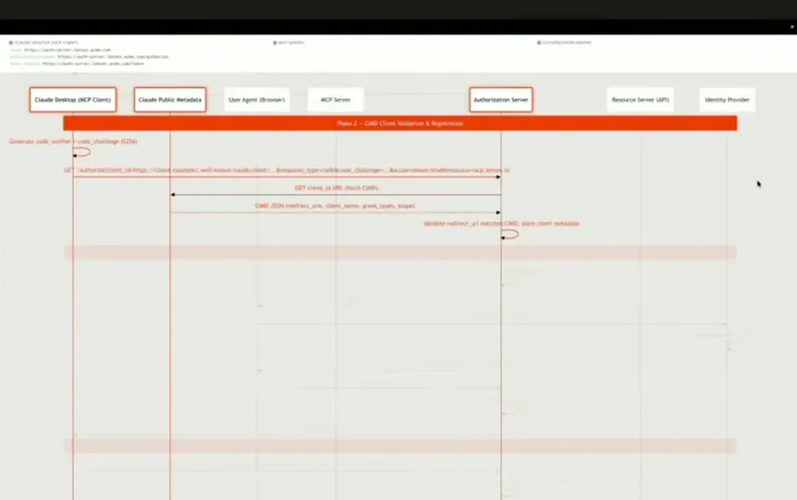
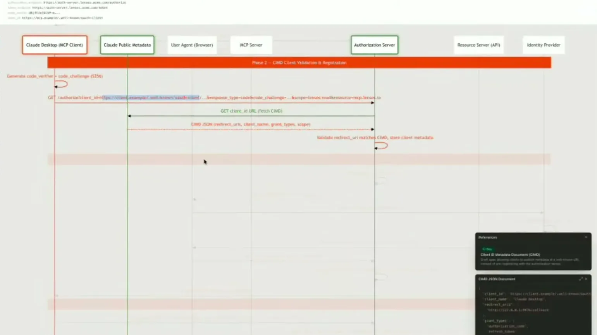
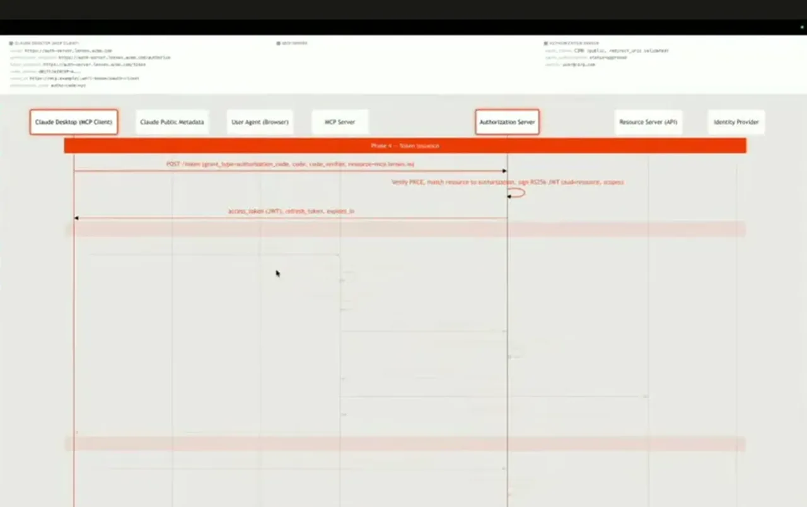
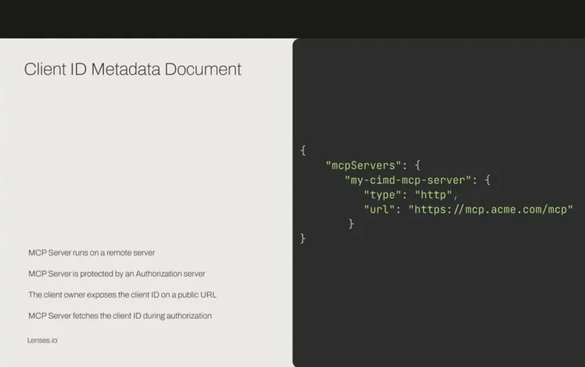
| Stance | Claim | t |
|---|---|---|
| warns | Because agents re-read every tool description on every connection, each description is a surface for tool poisoning via hidden, attacker-embedded instructions. | 02:36 |
| warns | An agent iterating over a poorly scoped MCP server broadcasts the full conversation history, including any sensitive data from prior tool calls, with every retry. | 03:07 |
| recommends | MCP servers should consolidate fine-grained operations into a single coarse-grained tool per desired outcome rather than exposing every underlying API call as its own tool. | 05:14 |
| asserts | A load test on standard IO MCP transport failed 20 of 22 requests with only 20 simultaneous connections. | 09:25 |
| asserts | Long-lived, unscoped credential setups still represent more than 50% of MCP servers in production today. | 13:04 |
| warns | Dynamic Client Registration is vulnerable to phishing because it has no reliable way to verify client identity and anyone can register a client. | 19:19 |
| recommends | Client ID Metadata Documents (CIMD) have been the preferred client-registration approach for MCP authorization since November 2025, improving on DCR. | 22:29 |
| recommends | PII fields such as email, phone, and national insurance numbers should be masked before an agent sees them, since agents should never handle data outside their task's business need. | 22:59 |
Machine-readable copy embedded in this page (script#ontology) and in the corpus ontology.